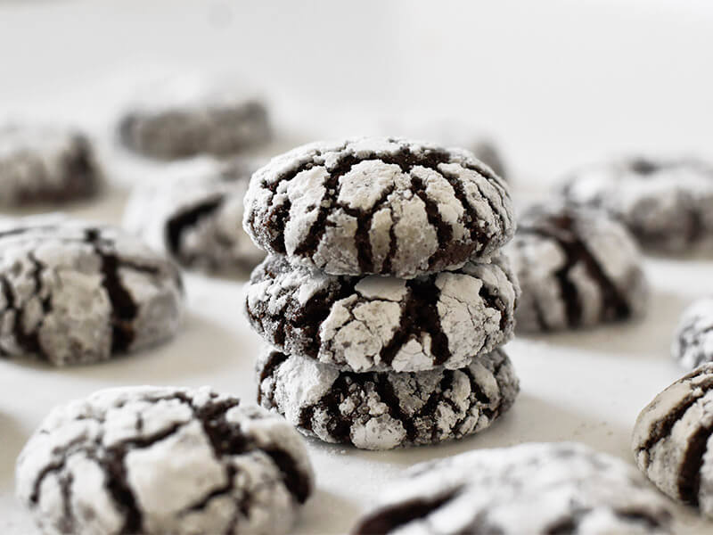

Снежное печенье
Рецепт восхитительного снежного шоколадного печенья!
Печенье с воздушной текстурой помадки и влажным внутри, напоминающим по текстуре пирожные.

Prerequisites
- 💡уровень сложности: начинающий
- ⏲Подготовка: 20 минут
- ⏲Время приготовления: 10 минут
- ⏲Общее время: 30 минут
- 👥Размер порции: 4 человека
Ингредиенты
- 2 eggs
- 1 стакан сахара
- A pinch of salt
- 3/4 стакана какао-порошка
- 1 1/2 стакана муки
- 2 чайные ложки разрыхлителя
- 1/4 стакана масла
- сахарная пудра
Instructions
- Смешайте яйца, сахар и соль в миске.
- Добавьте какао-порошок и перемешайте.
- Добавьте масло, разрыхлитель и муку и перемешайте.
- Поставьте миску в морозилку на 15 минут.
- В тарелку высыпаем сахарную пудру.
- Сделайте небольшие шарики.
- Обваляйте их в сахарной пудре.
- Выложите шарики в противень.
- Выпекайте печенье 10 минут при температуре 180°С.
- Пусть они остынут.
Video